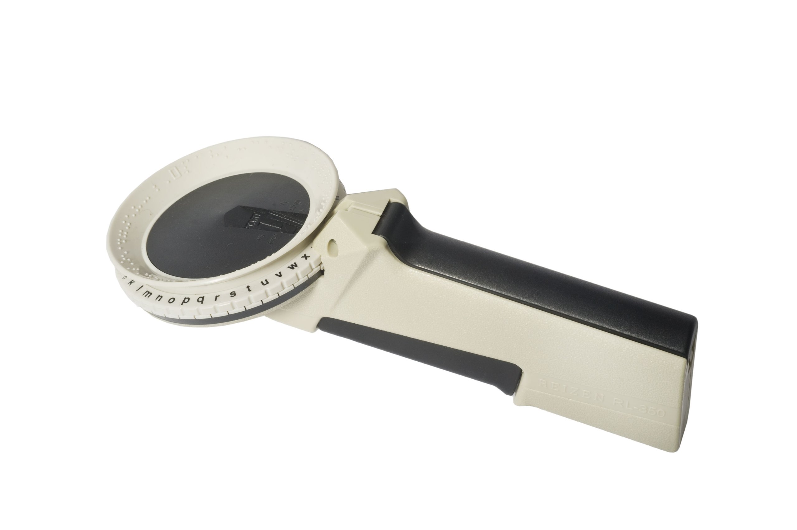
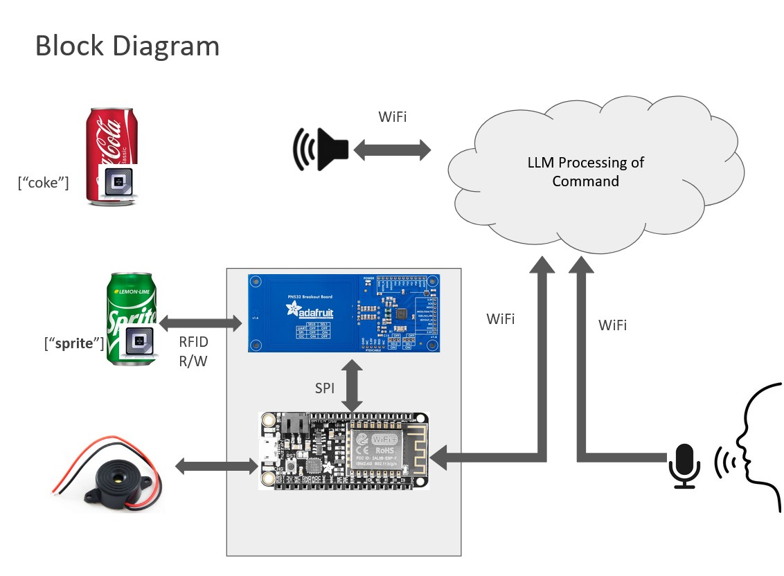
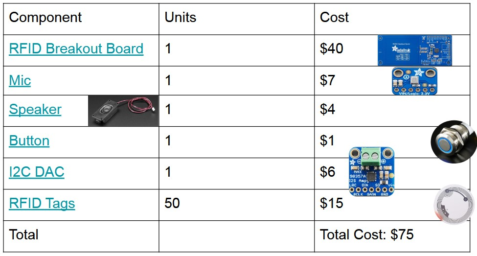

Marco Polo
A modern solution to braille tags, Marco ... Polo
Marco Polo is a solution for visually impaired individuals that scans RFID tags to provide voice-based feedback about items. The system stores information on each item's last known location and quantity, offering a more efficient alternative to traditional Braille tags. Using RFID for data storage and audio processing for voice commands, Marco Polo delivers real-time, intelligent responses through a microprocessor and large language model (LLM). This technology enhances item recognition and management, improving the quality of life for visually impaired individuals and offering significant societal and market potential.
Motivation
Mechanical Braille tags are tactile markers with raised dots that visually impaired individuals use to identify objects by touch. While effective, the process of creating and identifying tags can be time-consuming.
To modernize this, we’re using RFID tags for efficient tagging and storage, while integrating advanced LLMs as user interfaces to enhance interaction and accessibility.
System
Remember to use combination of descriptions, photos, and figures
Architecture
This system integrates RFID technology with cloud-based AI for seamless object recognition and user interaction.
When the user speaks a command into the mic, such as (What is this? or I want to store/register this XXX). This is sent over to the LLM on the cloud that then processes this information based on our customized prompt. It then sends a JSON packet to the ESP, which processes this information and turns on the buzzer to indicate it is ready to R/W onto the RFID tag.Once the tag has been read or written to, the esp sends a completion notification to the LLM which then uses a speaker and replies with a message.
Technical Components
Our physical components are the following:
-
RFID tags
RFID (Radio Frequency Identification) tags are small, passive devices that store data and communicate with a reader using radio waves. They are commonly used for inventory management, tracking objects, and providing unique identification for items. When scanned, RFID tags provide quick and accurate information about the object they are attached to. -
Adafruit RFID Breakout Board
The Adafruit RFID Breakout Board is a compact and versatile module designed for easy integration with microcontrollers, such as Arduino or Raspberry Pi. It allows for seamless communication with RFID tags, making it ideal for projects that require reading and writing RFID data. This board is often used in applications like access control, asset tracking, and identification systems. -
Buzzer
A buzzer is an electronic device that emits sound when activated, typically used for signaling or alerting purposes. In this context, a buzzer provides audio feedback to the user, indicating successful scans or other system events. It's an important component in systems where visual feedback is not available or practical, offering an intuitive way to convey information.
Prototype
We need to add pictures here
Results
If you click the image below you wil be redirected to our youtube video shocasing our results.
References
We used the following references when developping our product:
Gradio File Explorer Documentation
Adafruit PN532 RFID/NFC Python Guide
GitHub: NFC_PN532_SPI Repository

Contact
Contact Name 1: Robel Wondwossen
rw3043@columbia.edu
Contact Name 2: Joshua Mathew
jm5915@columbia.edu
Columbia University Department of Electrical Engineering
Instructor: Professsor Xiaofan (Fred) Jiang